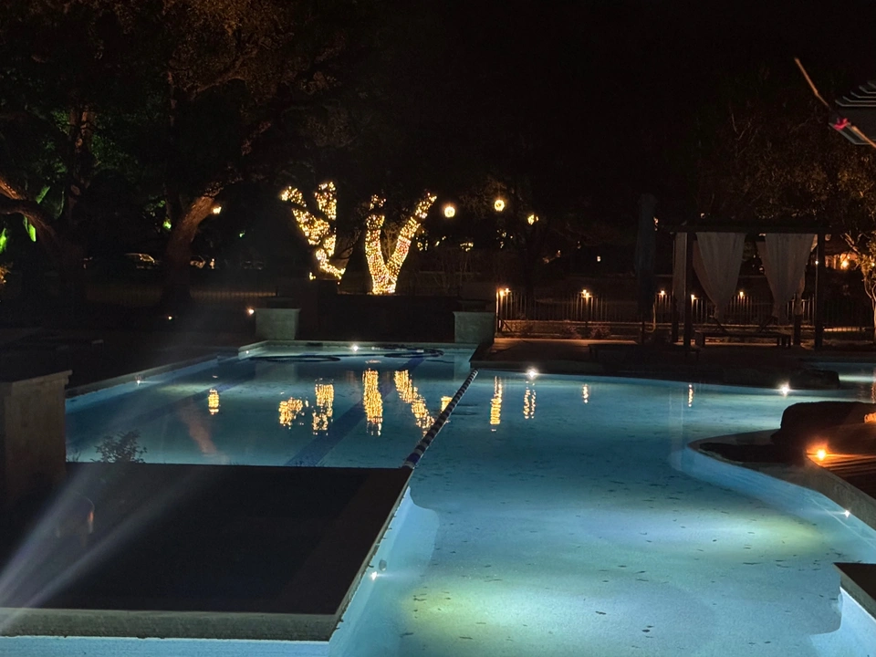

We orchestrated the creation of a 189,000 gallon ultra-luxury private club amenity, a project that
demanded
the coordination of over 15 specialty trades. The centerpiece is a 189,000 gallon free-form pool
with a
swim-up bar, complemented by two beautiful Int. Design 1,200 sq ft pool houses. The design, inspired
by 1950s New York
smoking clubs, features imported travertine and 10' high solid mahogany wood walls and doors. This
18-month project delivered a
resort-style oasis with professional landscaping, fire pits, and an outdoor kitchen, setting a new
standard for private club luxury.
"While this is my need to showcase my work, I do not want to take anything away from the
extraordinary and beautiful work done by Michael and Robert Smelek. Truly gifted, always
professionals, and absolute gentlemen!
Michael and Robert designed all of the large element items on this pool, and surrounding structures,
and I picked up and did all of the more finite detail work, including establishing the look and feel
of the bathrooms, which were purposely patterned to have the look and design aesthetic of a 1950's
NY Men's Smoking Club. While this was my initial idea, it was easily integrated into the project and
plans, flawlessly by Smelek Design.
I also designed the more finite details of this project, including making final decisions for all of
the furniture and fabrics, pool plaster color, swim-up bar front design and back-bar layout and
design and even including a custom 'blue' granite backsplash. Also included in this was the custom
post and rail design for the railing, leading to the pool slides. The reason behind the meticulous
design of these detail items is that with some forethought, subtle design elements make each of
these items, extraordinary, and seamlessly blend with the surrounding Architecture and Landscaping,
which all must be integral to the park-like setting, in which it sits.
At no time do I want to take away from the truly beautiful design work of Michael and Robert Smelek!
Thank you, both for your work!
— Michael E. Chandler
8215 Winding Hills Ln, Spring, Texas 77379"
Gallons189,000
Duration18
months
Features3-Acre
Amenity, Swim-up Bar, Pool Houses, Imported Travertine